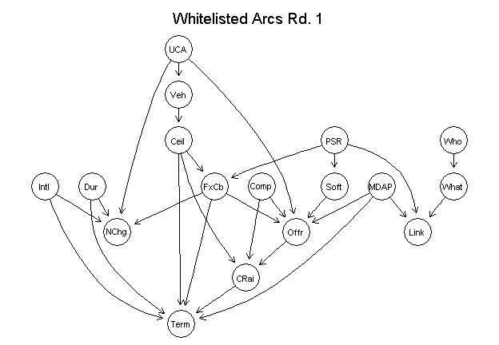
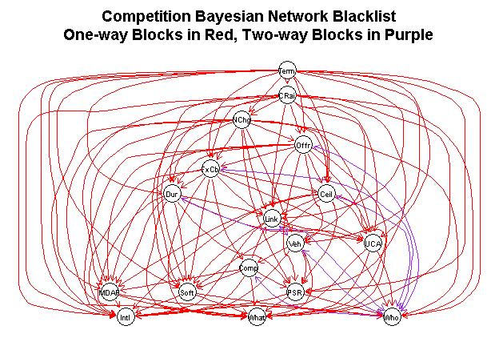
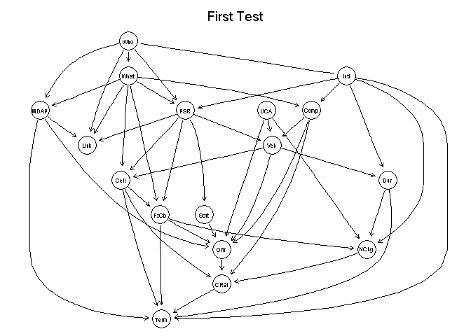
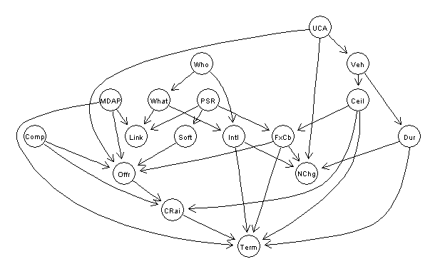
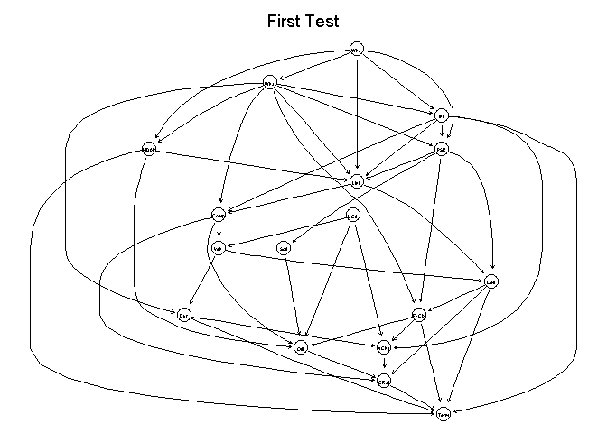
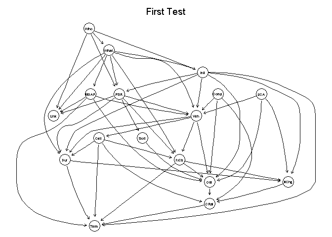
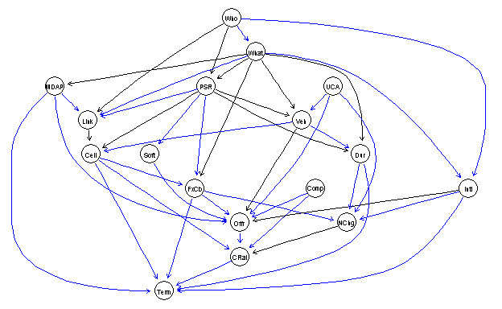

## Loading required package: ggplot2
## Loading required package: stringr
## Loading required package: graph
## Loading required package: plyr
##
## Attaching package: 'plyr'
##
## The following object is masked from 'package:graph':
##
## join
##
## Loading required package: Hmisc
## Loading required package: grid
## Loading required package: lattice
## Loading required package: survival
## Loading required package: Formula
##
## Attaching package: 'Hmisc'
##
## The following objects are masked from 'package:plyr':
##
## is.discrete, summarize
##
## The following objects are masked from 'package:base':
##
## format.pval, round.POSIXt, trunc.POSIXt, units
##
## Loading required package: Matrix
## Loading required package: gRain
## Loading required package: gRbase
## Loading required package: bnlearn
##
## Attaching package: 'bnlearn'
##
## The following objects are masked from 'package:gRbase':
##
## children, parents
##
## Loading required package: RgraphvizContracts are classified using a mix of numerical and categorical variables. While the changes in numerical variables are easy to grasp and summarize, a contract may have one line item that is competed and another that is not. As is detailed in the exploration on R&D, we are only considering information available prior to contract start. The percentage of contract obligations that were competed is a valuable benchmark, but is highly influenced by factors that occured after contract start..
Studying contract vehicle within the sample.
Describe contract vehicle here.
# setwd("K:\\Development\\Fixed-price\\")
filename<-"data\\defense_contract_CSIScontractID_model.csv"
zipfile<-unz("Data\\defense_contract_CSIScontractID_model.zip",
"defense_contract_CSIScontractID_model.csv")
ContractModel <- read.csv(
zipfile,
header = TRUE, sep = ",", dec = ".", strip.white = TRUE,
na.strings = c("NULL","NA",""),
stringsAsFactors = TRUE
)
ContractModel<-subset(ContractModel,select=-c(IDV,LowCeil))
#
# nrow(ContractModel)
# nrow(subset(ContractModel,complete.cases(ContractModel)))
# summary(subset(ContractModel,complete.cases(ContractModel)))
# .(FxCb,Comp,Link,MDAP,Who,What,Intl,PSR,Ceil,Dur,Offr,Veh,Term,Soft,UCA,CRai,NChg),#
names(ContractModel)## [1] "FxCb" "Comp" "Link" "MDAP" "Who" "What" "Intl" "PSR" "Ceil" "Dur"
## [11] "Offr" "Veh" "Term" "Soft" "UCA" "CRai" "NChg"dropped<-subset(ContractModel,!complete.cases(ContractModel)|
Intl=="Unlabeled"|
PSR =="Mixed or Unlabeled" |
Who=="Uncategorized" |
What =="Unlabeled")
ContractModel<-subset(ContractModel,complete.cases(ContractModel)&
Intl!="Unlabeled"&
PSR !="Mixed or Unlabeled"&
Who!="Uncategorized" &
What!="Unlabeled")
ContractModel$Intl<-droplevels(ContractModel$Intl)
ContractModel$PSR<-droplevels(ContractModel$PSR)
ContractModel$Who<-droplevels(ContractModel$Who)
ContractModel$What<-droplevels(ContractModel$What)
ContractModel$Comp<-droplevels(ContractModel$Comp)
nrow(ContractModel)## [1] 5890302The last stage before Bayesian learning is setting the whitelists and blacklists. The whitelist contains vectors that must existing in the graph while the blacklist contains forbidden vectors. There was some iteration in the development of the white and blacklist, as nonsensical connections were removed and the blacklist was made systematic.
I’ve listed them below based on the origin piece of evidence. 1. Veh (Vehicle) * Whitelist to Comp (Competition) as many forms of Vehs don’t qualify for full and open. * Blacklist to PSR (SimpleArea) because what you are buying is picked before how you are buying it. 2. FxCb (FixedOrCost) * Whitelist to One (SingleOffer) as this is the key study question. * Blacklist to PSR (SimpleArea) and Intl (AnyInternational) because figuring out what and where come first. * Blacklist to Ceil (qCeiling) and Dur (qDuration), because project scope should come before project pricing, although this may not be entirely true when the vendors make proposals. 3. Comp (Competition)
* Whitelist to One (SingleOffer). We’ll see how strong this connection ends up being, but it’s really straightforward. * Blacklist to PSR (SimpleArea), Intl (AnyInternational), and FxCb (FixedOrCost), as I think those details are set before deciding competition procedures. 4. Intl (AnyInternational) No restrictions or requirements. 5. PSR (SimpleArea) * Blacklist to Intl (AnyInternational) As I think the place of performance in the U.S. or abroad (but not the vendor location) is sometimes decided at least as early as the product or service. 6. Ceil (qCeiling) * Blacklist to PSR (SimpleArea) Intl (AnyInternational) because what and where come before scope. 7. Dur (qDuration) * Blacklist to PSR (SimpleArea) Intl (AnyInternational) because what and where come before scope. 8. One (SingleOffer) * Blacklist to everything not covered by an existing whitelist. While the vendors responses may influence some factors at the margin, this is the dependent variable for this part of the study.
#White list, connections that must occur
ContractWL<-data.frame(from="Comp",to="Offr")
# ContractWL<-rbind(ContractWL,data.frame(from="Comp",to="Offr"))
ContractWL<-rbind(ContractWL,data.frame(from="PSR",to="FxCb"))
ContractWL<-rbind(ContractWL,data.frame(from="PSR",to="Link"))
ContractWL<-rbind(ContractWL,data.frame(from="FxCb",to="Offr"))
ContractWL<-rbind(ContractWL,data.frame(from="What",to="Link"))
ContractWL<-rbind(ContractWL,data.frame(from="Who",to="What"))
ContractWL<-rbind(ContractWL,data.frame(from="Veh",to="Ceil"))
ContractWL<-rbind(ContractWL,data.frame(from="Ceil",to="FxCb"))
ContractWL<-rbind(ContractWL,data.frame(from="PSR",to="Soft"))
ContractWL<-rbind(ContractWL,data.frame(from="UCA",to="Veh"))
ContractWL<-rbind(ContractWL,data.frame(from="MDAP",to="Link"))
#Adding links to offers
ContractWL<-rbind(ContractWL,data.frame(from="UCA",to="Offr")) #Less appealing
ContractWL<-rbind(ContractWL,data.frame(from="MDAP",to="Offr")) #Fewer eligible vendors
ContractWL<-rbind(ContractWL,data.frame(from="Soft",to="Offr")) #Fewer eligible vendors
#Adding links to Terminations
ContractWL<-rbind(ContractWL,data.frame(from="Dur",to="Term")) #Longer greater risk of cancellation
ContractWL<-rbind(ContractWL,data.frame(from="FxCb",to="Term")) #Harder to adapt to changes
ContractWL<-rbind(ContractWL,data.frame(from="Ceil",to="Term")) #Bigger, termination more necessary
ContractWL<-rbind(ContractWL,data.frame(from="CRai",to="Term")) #Overruns increase risk of termination
ContractWL<-rbind(ContractWL,data.frame(from="Intl",to="Term")) #Outside factors can drive international cancellation
# ContractWL<-rbind(ContractWL,data.frame(from="Soft",to="Term")) #Covering all hypotheses and controls
# ContractWL<-rbind(ContractWL,data.frame(from="UCA",to="Term")) #Covering all hypotheses and controls
# ContractWL<-rbind(ContractWL,data.frame(from="What",to="Term")) #Covering all hypotheses and controls
# ContractWL<-rbind(ContractWL,data.frame(from="Veh",to="Term")) #Covering all hypotheses and controls
# ContractWL<-rbind(ContractWL,data.frame(from="PSR",to="Term")) #Covering all hypotheses and controls
ContractWL<-rbind(ContractWL,data.frame(from="MDAP",to="Term")) #Major cancellations can cascade
# ContractWL<-rbind(ContractWL,data.frame(from="Comp",to="Term")) #Covering all hypotheses and controls
#Adding links to Number of Change Orders
ContractWL<-rbind(ContractWL,data.frame(from="Dur",to="NChg")) #Longer greater risk of cancellation
ContractWL<-rbind(ContractWL,data.frame(from="FxCb",to="NChg")) #Less flexible contract type
ContractWL<-rbind(ContractWL,data.frame(from="Intl",to="NChg")) #Outside factors can drive international cancellation
ContractWL<-rbind(ContractWL,data.frame(from="UCA",to="NChg")) #Greater uncertainty with UCAs
# ContractWL<-rbind(ContractWL,data.frame(from="Ceil",to="NChg")) #Covering all hypotheses and controls
# ContractWL<-rbind(ContractWL,data.frame(from="Soft",to="NChg")) #Covering all hypotheses and controls
# ContractWL<-rbind(ContractWL,data.frame(from="What",to="NChg")) #Covering all hypotheses and controls
# ContractWL<-rbind(ContractWL,data.frame(from="Veh",to="NChg")) #Covering all hypotheses and controls
# ContractWL<-rbind(ContractWL,data.frame(from="PSR",to="NChg")) #Covering all hypotheses and controls
# ContractWL<-rbind(ContractWL,data.frame(from="MDAP",to="NChg")) #Covering all hypotheses and controls
# ContractWL<-rbind(ContractWL,data.frame(from="Comp",to="NChg")) #Covering all hypotheses and controls
#Adding links to Number of Ceiling Raising Change orders
ContractWL<-rbind(ContractWL,data.frame(from="Comp",to="CRai")) #Risk of low balling
ContractWL<-rbind(ContractWL,data.frame(from="Offr",to="CRai")) #Risk of monopolistic practices if one offer
ContractWL<-rbind(ContractWL,data.frame(from="Ceil",to="CRai")) #Large contracts likely smaller % change
# ContractWL<-rbind(ContractWL,data.frame(from="Dur",to="CRai")) #Covering all hypotheses and controls
# ContractWL<-rbind(ContractWL,data.frame(from="Soft",to="CRai")) #Covering all hypotheses and controls
# ContractWL<-rbind(ContractWL,data.frame(from="UCA",to="CRai")) #Covering all hypotheses and controls
# ContractWL<-rbind(ContractWL,data.frame(from="What",to="CRai")) #Covering all hypotheses and controls
# ContractWL<-rbind(ContractWL,data.frame(from="Veh",to="CRai")) #Covering all hypotheses and controls
# ContractWL<-rbind(ContractWL,data.frame(from="PSR",to="CRai")) #Covering all hypotheses and controls
# ContractWL<-rbind(ContractWL,data.frame(from="MDAP",to="CRai")) #Covering all hypotheses and controls
# ContractWL<-rbind(ContractWL,data.frame(from="Comp",to="CRai")) #Covering all hypotheses and controls
bnWhitelist <- empty.graph(nodes = names(ContractModel))
arcs(bnWhitelist)<-ContractWL
graphviz.plot(bnWhitelist,main="Whitelisted Arcs Rd. 1")
#Black list, connections that are prohibited
ContractBL<-data.frame(from=c("Offr"),to= c("Veh"))
ContractBL<-rbind(ContractBL,data.frame(from="Offr",to="Who"))
ContractBL<-rbind(ContractBL,data.frame(from="Offr",to="What"))
ContractBL<-rbind(ContractBL,data.frame(from="Offr",to="PSR"))
ContractBL<-rbind(ContractBL,data.frame(from="Offr",to="Intl"))
ContractBL<-rbind(ContractBL,data.frame(from="Offr",to="FxCb"))
ContractBL<-rbind(ContractBL,data.frame(from="Offr",to="Ceil"))
ContractBL<-rbind(ContractBL,data.frame(from="Offr",to="Dur"))
ContractBL<-rbind(ContractBL,data.frame(from="Offr",to="Link"))
ContractBL<-rbind(ContractBL,data.frame(from="Offr",to="UCA"))
ContractBL<-rbind(ContractBL,data.frame(from="Offr",to="Soft"))
ContractBL<-rbind(ContractBL,data.frame(from="Offr",to="MDAP"))
# ContractBL<-rbind(ContractBL,data.frame(from="Who",to="Offr"))
ContractBL<-rbind(ContractBL,data.frame(from="Link",to="Who"))
ContractBL<-rbind(ContractBL,data.frame(from="Link",to="Intl"))
ContractBL<-rbind(ContractBL,data.frame(from="Link",to="Veh"))
ContractBL<-rbind(ContractBL,data.frame(from="Link",to="UCA"))
ContractBL<-rbind(ContractBL,data.frame(from="Link",to="Soft"))
ContractBL<-rbind(ContractBL,data.frame(from="FxCb",to="Who"))
ContractBL<-rbind(ContractBL,data.frame(from="FxCb",to="What"))
ContractBL<-rbind(ContractBL,data.frame(from="FxCb",to="Intl"))
ContractBL<-rbind(ContractBL,data.frame(from="FxCb",to="Ceil"))
ContractBL<-rbind(ContractBL,data.frame(from="FxCb",to="Dur"))
ContractBL<-rbind(ContractBL,data.frame(from="FxCb",to="Link"))
ContractBL<-rbind(ContractBL,data.frame(from="FxCb",to="Comp"))
ContractBL<-rbind(ContractBL,data.frame(from="FxCb",to="UCA"))
ContractBL<-rbind(ContractBL,data.frame(from="FxCb",to="Soft"))
ContractBL<-rbind(ContractBL,data.frame(from="FxCb",to="MDAP"))
ContractBL<-rbind(ContractBL,data.frame(from="Ceil",to="Who"))
ContractBL<-rbind(ContractBL,data.frame(from="Ceil",to="What"))
ContractBL<-rbind(ContractBL,data.frame(from="Ceil",to="PSR"))
ContractBL<-rbind(ContractBL,data.frame(from="Ceil",to="Intl"))
ContractBL<-rbind(ContractBL,data.frame(from="Ceil",to="Link"))
ContractBL<-rbind(ContractBL,data.frame(from="Ceil",to="UCA"))
ContractBL<-rbind(ContractBL,data.frame(from="Ceil",to="Soft"))
ContractBL<-rbind(ContractBL,data.frame(from="Ceil",to="MDAP"))
ContractBL<-rbind(ContractBL,data.frame(from="Dur",to="Who"))
ContractBL<-rbind(ContractBL,data.frame(from="Dur",to="What"))
ContractBL<-rbind(ContractBL,data.frame(from="Dur",to="PSR"))
ContractBL<-rbind(ContractBL,data.frame(from="Dur",to="Intl"))
ContractBL<-rbind(ContractBL,data.frame(from="Dur",to="Link"))
ContractBL<-rbind(ContractBL,data.frame(from="Dur",to="UCA"))
ContractBL<-rbind(ContractBL,data.frame(from="Dur",to="Soft"))
ContractBL<-rbind(ContractBL,data.frame(from="Dur",to="MDAP"))
ContractBL<-rbind(ContractBL,data.frame(from="Comp",to="Who"))
ContractBL<-rbind(ContractBL,data.frame(from="Comp",to="What"))
ContractBL<-rbind(ContractBL,data.frame(from="Comp",to="PSR"))
ContractBL<-rbind(ContractBL,data.frame(from="Comp",to="Link"))
ContractBL<-rbind(ContractBL,data.frame(from="Comp",to="Intl"))
ContractBL<-rbind(ContractBL,data.frame(from="Comp",to="Soft"))
ContractBL<-rbind(ContractBL,data.frame(from="Comp",to="MDAP"))
ContractBL<-rbind(ContractBL,data.frame(from="PSR",to="Who"))
ContractBL<-rbind(ContractBL,data.frame(from="PSR",to="What"))
ContractBL<-rbind(ContractBL,data.frame(from="PSR",to="Intl"))
ContractBL<-rbind(ContractBL,data.frame(from="Soft",to="Who"))
ContractBL<-rbind(ContractBL,data.frame(from="Soft",to="What"))
ContractBL<-rbind(ContractBL,data.frame(from="Soft",to="Intl"))
ContractBL<-rbind(ContractBL,data.frame(from="MDAP",to="Who"))
ContractBL<-rbind(ContractBL,data.frame(from="MDAP",to="What"))
ContractBL<-rbind(ContractBL,data.frame(from="MDAP",to="Intl"))
ContractBL<-rbind(ContractBL,data.frame(from="UCA",to="Who"))
ContractBL<-rbind(ContractBL,data.frame(from="UCA",to="What"))
ContractBL<-rbind(ContractBL,data.frame(from="UCA",to="Intl"))
ContractBL<-rbind(ContractBL,data.frame(from="Veh",to="Who"))
ContractBL<-rbind(ContractBL,data.frame(from="Veh",to="What"))
ContractBL<-rbind(ContractBL,data.frame(from="Veh",to="PSR"))
ContractBL<-rbind(ContractBL,data.frame(from="Veh",to="Intl"))
ContractBL<-rbind(ContractBL,data.frame(from="Veh",to="Comp"))
ContractBL<-rbind(ContractBL,data.frame(from="Veh",to="Link"))
# ContractBL<-rbind(ContractBL,data.frame(from="Comp",to="Ceil"))
# ContractBL<-rbind(ContractBL,data.frame(from="Comp",to="Dur"))
ContractBL<-rbind(ContractBL,data.frame(from="Who",to="Comp"))
ContractBL<-rbind(ContractBL,data.frame(from="Who",to="Offr"))
ContractBL<-rbind(ContractBL,data.frame(from="Who",to="Veh"))
ContractBL<-rbind(ContractBL,data.frame(from="Who",to="FxCb"))
ContractBL<-rbind(ContractBL,data.frame(from="Who",to="Ceil"))
ContractBL<-rbind(ContractBL,data.frame(from="Who",to="Dur"))
ContractBL<-rbind(ContractBL,data.frame(from="NChg",to="Veh"))
ContractBL<-rbind(ContractBL,data.frame(from="NChg",to="Who"))
ContractBL<-rbind(ContractBL,data.frame(from="NChg",to="What"))
ContractBL<-rbind(ContractBL,data.frame(from="NChg",to="PSR"))
ContractBL<-rbind(ContractBL,data.frame(from="NChg",to="Intl"))
ContractBL<-rbind(ContractBL,data.frame(from="NChg",to="FxCb"))
ContractBL<-rbind(ContractBL,data.frame(from="NChg",to="Ceil"))
ContractBL<-rbind(ContractBL,data.frame(from="NChg",to="Dur"))
ContractBL<-rbind(ContractBL,data.frame(from="NChg",to="Link"))
ContractBL<-rbind(ContractBL,data.frame(from="NChg",to="Offr"))
ContractBL<-rbind(ContractBL,data.frame(from="NChg",to="UCA"))
ContractBL<-rbind(ContractBL,data.frame(from="NChg",to="Soft"))
ContractBL<-rbind(ContractBL,data.frame(from="NChg",to="MDAP"))
ContractBL<-rbind(ContractBL,data.frame(from="CRai",to="Veh"))
ContractBL<-rbind(ContractBL,data.frame(from="CRai",to="Who"))
ContractBL<-rbind(ContractBL,data.frame(from="CRai",to="What"))
ContractBL<-rbind(ContractBL,data.frame(from="CRai",to="PSR"))
ContractBL<-rbind(ContractBL,data.frame(from="CRai",to="Intl"))
ContractBL<-rbind(ContractBL,data.frame(from="CRai",to="FxCb"))
ContractBL<-rbind(ContractBL,data.frame(from="CRai",to="Ceil"))
ContractBL<-rbind(ContractBL,data.frame(from="CRai",to="Dur"))
ContractBL<-rbind(ContractBL,data.frame(from="CRai",to="Link"))
ContractBL<-rbind(ContractBL,data.frame(from="CRai",to="Offr"))
ContractBL<-rbind(ContractBL,data.frame(from="CRai",to="NChg"))
ContractBL<-rbind(ContractBL,data.frame(from="CRai",to="UCA"))
ContractBL<-rbind(ContractBL,data.frame(from="CRai",to="Soft"))
ContractBL<-rbind(ContractBL,data.frame(from="CRai",to="MDAP"))
ContractBL<-rbind(ContractBL,data.frame(from="Term",to="Veh"))
ContractBL<-rbind(ContractBL,data.frame(from="Term",to="Who"))
ContractBL<-rbind(ContractBL,data.frame(from="Term",to="What"))
ContractBL<-rbind(ContractBL,data.frame(from="Term",to="PSR"))
ContractBL<-rbind(ContractBL,data.frame(from="Term",to="Intl"))
ContractBL<-rbind(ContractBL,data.frame(from="Term",to="FxCb"))
ContractBL<-rbind(ContractBL,data.frame(from="Term",to="Ceil"))
ContractBL<-rbind(ContractBL,data.frame(from="Term",to="Dur"))
ContractBL<-rbind(ContractBL,data.frame(from="Term",to="Link"))
ContractBL<-rbind(ContractBL,data.frame(from="Term",to="Offr"))
ContractBL<-rbind(ContractBL,data.frame(from="Term",to="NChg"))
ContractBL<-rbind(ContractBL,data.frame(from="Term",to="CRai"))
ContractBL<-rbind(ContractBL,data.frame(from="Term",to="UCA"))
ContractBL<-rbind(ContractBL,data.frame(from="Term",to="Soft"))
ContractBL<-rbind(ContractBL,data.frame(from="Term",to="MDAP"))
AllArcsBL<-paste(ContractBL$to,ContractBL$from,sep="~")
ReversedArcsBL<-paste(ContractBL$from,ContractBL$to,sep="~")
DoubleArcsBL<-AllArcsBL[AllArcsBL %in% ReversedArcsBL]
SingleArcsBL<-ReversedArcsBL[!ReversedArcsBL %in% AllArcsBL]
PurpleBL<-c(rep("purple",length(DoubleArcsBL)))
names(PurpleBL)<-DoubleArcsBL
RedBL<-c(rep("red",length(SingleArcsBL)))
names(RedBL)<-SingleArcsBL
ColorsBL<-c(PurpleBL,RedBL)
df <- data.frame(from=ContractBL$from, to=ContractBL$to, weight=rep(1,nrow(ContractBL)))
gBL <- graphBAM( data.frame(from=ContractBL$from, to=ContractBL$to, weight=rep(1,nrow(ContractBL))),
edgemode = "directed")
# adjacencyMatrix(gBL)
# plot(gBL,main="Fixed Price Bayesian Network Blacklist")
# AllArcs<-edgeNames(gBL)
# ReversedArcs<-paste(sub(pattern = "[a-zA-Z0-9]*~", replacement="", x = AllArcs),
# sub(pattern = "~[a-zA-Z0-9]*", replacement="", x = AllArcs),
# sep="~")
# DoubleArcs<-AllArcs[AllArcs %in% ReversedArcs]
eAttrs<-list()
eAttrs$color<-ColorsBL[names(ColorsBL) %in% edgeNames(gBL)]
nNodes <- length(nodes(gBL))
nA <- list()
# > nA$fixedSize<-rep(FALSE, nNodes)
nA$height <- nA$width <- rep("3.5", nNodes)
# > nA$label <- rep("z", nNodes)
# > nA$color <- rep("green", nNodes)
# > nA$fillcolor <- rep("orange", nNodes)
# > nA$shape <- rep("circle", nNodes)
# > nA$fontcolor <- rep("blue", nNodes)
nA$fontsize <- rep(18, nNodes)
nA <- lapply(nA, function(x) { names(x) <- nodes(gBL); x})
plot(gBL,
main="Competition Bayesian Network Blacklist\nOne-way Blocks in Red, Two-way Blocks in Purple",
edgeAttrs=eAttrs,
nodeAttrs=nA,
"dot")
After the team developed the initial list and a small number of elements accidentally left off were corrected for, the next step was to do a preliminary run through with Bayesian learning.
Noteably this initial run through produced two warnings of challenging relationships Veh to Dur and Veh to FxCb. After consulting within the team, the choice was made to add whitelisted relationships that went against those automatically produced.
Veh (IsVeh) new white lists: * Whitelist to FxCb (FixedOrCost) because the pricing mechanism of most Vehs are set. Thus, once the choice of which Veh to use is made, the pricing mechanism would be set automatically. Furthermore, Fixed-price is often the mechanism because the Veh allows for multiple instances of a single contract reducing the need for the flexabilit Cost-Based contracts offer. * Whitelist to Dur (Duration) because the use of the Veh mechanism typically means multiple shorter contractors under one Veh rather than a single longer contract.
With those two connections in hand, all three Bayesian Learning algorith were applied.
#White list, connections that must occur
iamb_dug<-iamb(ContractModel,blacklist=ContractBL,whitelist=ContractWL,optimized=TRUE, alpha=0.001)## Warning in FUN(newX[, i], ...): vstructure Comp -> Veh <- Dur is not
## applicable, because one or both arcs are oriented in the opposite
## direction.## Warning in FUN(newX[, i], ...): vstructure PSR -> Veh <- Dur is not
## applicable, because one or both arcs are oriented in the opposite
## direction.## Warning in FUN(newX[, i], ...): vstructure Dur -> Veh <- UCA is not
## applicable, because one or both arcs are oriented in the opposite
## direction.undirected.arcs(iamb_dug)## from to
## [1,] "Who" "Intl"
## [2,] "Intl" "Who"attrs<-list(node=list(fontsize=27))
graphviz.plot(iamb_dug,main="First Test")
# uiamb_dug<-iamb(ContractModel,blacklist=ContractBL,whitelist=ContractWL,optimized=FALSE, alpha=0.001)
# graphviz.plot(uiamb_dug,main="First Test")
# #Comparing the optimized and unoptimized Incremental Association results
# all.equal(iamb_dug,uiamb_dug)
#
# interiamb_dug<-inter.iamb(ContractModel,blacklist=ContractBL,whitelist=ContractWL, alpha=0.001)
# graphviz.plot(interiamb_dug,main="First Test")
# uinteriamb_dug<-inter.iamb(ContractModel,blacklist=ContractBL,whitelist=ContractWL,optimized=FALSE, alpha=0.001)The first round produces multiple warnings because the networks produced produce two-way arcs, which are not allowed. These are resolved through additional white list settings.
#White list, connections that must occur
#Resolving cases where one or both arcs are oriented in opposite directions.
# ContractWL<-rbind(ContractWL,data.frame(from="Veh",to="FxCb"))
ContractWL<-rbind(ContractWL,data.frame(from="Veh",to="Dur"))
# ContractWL<-rbind(ContractWL,data.frame(from="Ceil",to="Dur"))
ContractWL<-rbind(ContractWL,data.frame(from="Who",to="Intl"))
ContractWL<-rbind(ContractWL,data.frame(to="Intl",from="What"))
gWL <- graphBAM( data.frame(from=ContractWL$from, to=ContractWL$to, weight=rep(1,nrow(ContractWL))),
edgemode = "directed")
plot(gWL,
# main="Competition Bayesian Network Blacklist\nOne-way Blocks in Red, Two-way Blocks in Purple",
# edgeAttrs=eAttrs,
# nodeAttrs=nA,
"dot")
iamb_dug<-iamb(ContractModel,blacklist=ContractBL,whitelist=ContractWL,optimized=TRUE, alpha=0.001)## Warning in FUN(newX[, i], ...): vstructure What -> Dur <- Ceil is not
## applicable, because one or both arcs are oriented in the opposite
## direction.graphviz.plot(iamb_dug,main="First Test")
uiamb_dug<-iamb(ContractModel,blacklist=ContractBL,whitelist=ContractWL,optimized=FALSE, alpha=0.001)
graphviz.plot(uiamb_dug,main="First Test")
# #Comparing the optimized and unoptimized Incremental Association results
# all.equal(iamb_dug,uiamb_dug)
#
interiamb_dug<-inter.iamb(ContractModel,blacklist=ContractBL,whitelist=ContractWL, alpha=0.001)## Warning in FUN(newX[, i], ...): vstructure FxCb -> Veh <- Comp is not
## applicable, because one or both arcs introduce cycles in the graph.## Warning in FUN(newX[, i], ...): vstructure FxCb -> Veh <- MDAP is not
## applicable, because one or both arcs introduce cycles in the graph.## Warning in FUN(newX[, i], ...): vstructure FxCb -> Veh <- UCA is not
## applicable, because one or both arcs introduce cycles in the graph.## Warning in FUN(newX[, i], ...): vstructure FxCb -> Veh <- Intl is not
## applicable, because one or both arcs introduce cycles in the graph.graphviz.plot(interiamb_dug,main="First Test")
uinteriamb_dug<-inter.iamb(ContractModel,blacklist=ContractBL,whitelist=ContractWL,optimized=FALSE, alpha=0.001)#
#
highlightWL <- list(arcs = ContractWL, col = "blue")
#
# highlightLists2 <- list(arcs = data.frame(from=c(as.character(ContractWL$from),
# as.character(ContractBL$to)),
# to=c(as.character(ContractWL$to),
# as.character(ContractBL$from))),
# col = "blue")
#
#
#
#
iamb_dug<-iamb(ContractModel,blacklist=ContractBL,whitelist=ContractWL,optimized=TRUE, alpha=0.001)## Warning in FUN(newX[, i], ...): vstructure What -> Dur <- Ceil is not
## applicable, because one or both arcs are oriented in the opposite
## direction.uiamb_dug<-iamb(ContractModel,blacklist=ContractBL,whitelist=ContractWL,optimized=FALSE, alpha=0.001)
# #Comparing the optimized and unoptimized Incremental Association results
# all.equal(iamb_dug,uiamb_dug)
#
# interiamb_dug<-inter.iamb(ContractModel,blacklist=ContractBL,whitelist=ContractWL, alpha=0.001)
# uinteriamb_dug<-inter.iamb(ContractModel,blacklist=ContractBL,whitelist=ContractWL,optimized=FALSE, alpha=0.001)
# #They also dont match with interleaved.
# all.equal(interiamb_dug,uinteriamb_dug)
# all.equal(uiamb_dug,uinteriamb_dug)
#
# mmpc_dug<-mmpc(ContractModel)
# ummpc_dug<-mmpc(ContractModel,blacklist=ContractBL,whitelist=ContractWL,optimized=FALSE)
# #They also dont match with interleaved.
# all.equal(mmpc_dug,ummpc_dug)
#
# gs_dug<-gs(ContractModel,blacklist=ContractBL,whitelist=ContractWL,alpha=0.001)
#
# #But the two methods do not producing matching results
# all.equal(iamb_dug,interiamb_dug)
# all.equal(uiamb_dug,uinteriamb_dug)
# all.equal(uiamb_dug,mmpc_dug)
#
#
# uinteriamb_dug05<-inter.iamb(ContractModel,blacklist=ContractBL,whitelist=ContractWL,optimized=FALSE,alpha=0.05)
#
# hc_dug<- hc(ContractModel, score = "aic",blacklist=ContractBL,whitelist=ContractWL,optimized=FALSE)
# graphviz.plot(hc_dug,main="Hill Climbing Whitelist highlighted",highlight=highlightWL2)
# graphviz.plot(hc_dug,main="Hill Climbing Whitelist Interleaved highlighted ",highlight=list(arcs=arcs(uinteriamb_dug)))
# graphviz.plot(uinteriamb_dug,main="Unoptimized Interleaved Hillclimbing highlighted",highlight=list(arcs=arcs(hc_dug)))
#
#
# graphviz.plot(uiamb_dug,main="Unoptimized Incremental Association ",highlight=highlightWL2)
# graphviz.plot(uinteriamb_dug,main="Unoptimized Interleaved Incremental Association ",highlight=highlightWL2)
# graphviz.plot(mmpc_dug,main="MMPC ",highlight=highlightWL2)
#
# # graphviz.plot(uiamb_dug,main="Unoptimized Incremental Association ",highlight=arcs(uinteriamb_dug))
#
# graphviz.plot(gs_dug,main="Grow-Shrink 2nd run",highlight=highlightWL2)
#
# #Comparing the optimized and unoptimized Interleaved Incremental Association results
#
# uinteriamb_dug00001<-inter.iamb(ContractModel,blacklist=ContractBL,whitelist=ContractWL,optimized=FALSE,alpha=0.000001)
# all.equal(uinteriamb_dug,uinteriamb_dug00001)
#
#
# modelstring(uinteriamb_dug00001)
# modelstring(uinteriamb_dug)
modelstring(interiamb_dug)## [1] "[Comp][Who][UCA][What|Who][MDAP|What][Intl|Who:What][PSR|Who:What:Intl][Link|MDAP:Who:What:PSR][Veh|Comp:MDAP:What:Intl:PSR:UCA][Soft|PSR][Ceil|Veh][FxCb|What:PSR:Ceil:Veh][Dur|What:Intl:PSR:Ceil:Veh][Offr|FxCb:Comp:MDAP:Intl:Veh:Soft:UCA][NChg|FxCb:Intl:Dur:UCA][CRai|Comp:Ceil:Offr:NChg][Term|FxCb:MDAP:Intl:Ceil:Dur:CRai]"# modelstring(uiamb_dug)
# modelstring(iamb_dug)
# modelstring(hc_dug)
# modelstring(gs_dug)
#
# # [1] "[Who][What|Who][Intl|Who:What][PSR|Who:What:Intl][FxCb|PSR][Comp|What:Intl:PSR][Link|Who:What:Intl:PSR][Veh|Comp:What:Intl:PSR][Ceil|Veh:What:Intl:PSR][Dur|Veh:Comp:Link:What:Intl:PSR:Ceil][Offr|Veh:FxCb:Comp:Link:What:Intl:Ceil]"
# # > modelstring(uinteriamb_dug00001)
# # [1] "[Who][What|Who][Intl|Who:What][PSR|Who:What:Intl][FxCb|PSR][Comp|What:Intl:PSR][Link|Who:What:Intl:PSR][Veh|Comp:What:Intl:PSR][Ceil|Veh:What:Intl:PSR][Dur|Veh:Comp:Link:What:Intl:PSR:Ceil][Offr|Veh:FxCb:Comp:Link:What:Intl:Ceil]"
# # > modelstring(uinteriamb_dug)
# # [1] "[Who][What|Who][Intl|Who:What][PSR|Who:What:Intl][FxCb|PSR][Comp|What:Intl:PSR][Link|Who:What:Intl:PSR][Veh|Comp:What:Intl:PSR][Ceil|Veh:What:Intl:PSR][Dur|Veh:Comp:Link:What:Intl:PSR:Ceil][Offr|Veh:FxCb:Comp:Link:What:Intl:Ceil]"
# # > modelstring(interiamb_dug)
# # [1] "[Who][What|Who][Intl|Who:What][PSR|Who:What:Intl][FxCb|PSR][Comp|What:Intl:PSR][Link|Who:What:Intl:PSR][Veh|Comp:What:Intl:PSR][Ceil|Veh:What:Intl:PSR][Dur|Veh:Comp:Link:What:Intl:PSR:Ceil][Offr|Veh:FxCb:Comp:Link:What:Intl:Ceil:Dur]"
# # > modelstring(uiamb_dug)
# # [1] "[Who][What|Who][Intl|Who:What][PSR|Who:What:Intl][Link|Who:What:Intl:PSR][Comp|Link:What:Intl:PSR][Veh|Comp:What:PSR][Ceil|Veh:What:Intl:PSR][FxCb|PSR:Ceil][Dur|Veh:Comp:Link:What:Intl:PSR:Ceil][Offr|Veh:FxCb:Comp:What:Intl]"
# # > modelstring(iamb_dug)
# # [1] "[Who][What|Who][Intl|Who:What][PSR|Who:What:Intl][Link|Who:What:Intl:PSR][Comp|Link:What:Intl:PSR][Veh|Comp:What:PSR][Ceil|Veh:What:Intl:PSR][FxCb|PSR:Ceil][Dur|Veh:Comp:Link:What:Intl:PSR:Ceil][Offr|Veh:FxCb:Comp:What:Intl:Dur]"
# # > modelstring(hc_dug)
# # [1] "[Who][Intl|Who][What|Who:Intl][PSR|Who:What:Intl][Link|Who:What:Intl:PSR][Comp|Link:What:Intl:PSR][Dur|Comp:Link:What:Intl:PSR][Veh|Comp:What:Intl:PSR:Dur][Ceil|Veh:Comp:Link:What:Intl:PSR:Dur][FxCb|Veh:Comp:Link:What:PSR:Ceil:Dur][Offr|Veh:FxCb:Comp:What:Intl:PSR:Ceil:Dur]"
# # graphviz.plot(uinteriamb_dug,main="Unoptimized Interleaved Incremental 001 Association 00001 highlighted",highlight=list(arcs=arcs(uinteriamb_dug00001)))
# # graphviz.plot(uinteriamb_dug,main="Unoptimized Interleaved Incremental Association Optimized highlighted",highlight=list(arcs=arcs(interiamb_dug)))
# # graphviz.plot(interiamb_dug,main="optimized Interleaved Incremental Association UnOptimized highlighted",highlight=list(arcs=arcs(uinteriamb_dug)))
#
# graphviz.plot(uinteriamb_dug,main="Unoptimized Interleaved Incremental Association IAMB highlighted",highlight=list(arcs=arcs(uiamb_dug)))
#
# graphviz.plot(iamb_dug,main="Unoptimized Incremental Association Unoptimized IAMB highlighted",highlight=list(arcs=arcs(uiamb_dug)))
# graphviz.plot(uiamb_dug,main="optimized Incremental Association IAMB highlighted",highlight=list(arcs=arcs(iamb_dug)))To the study teams dismay, the bayesian learning results were not consistent across different methods. The unoptimized versions of the learning algorithms do better at catching statistical oddities at the cost of requiring more comparisons. After analyzing the unoptimized and optimized versions, the team chose to adopt one arc that appeared in the both unoptimized versions, namely duration to offers. Seperate analysis shown in the Contract_Competition found that longer contracts did have fewer offers even after controlling for contract ceiling.
Similarly, the grow shrink algorithm included a link from Ceil to FxCb. Analysis shown in Contract_Pricing holds up that connection, even after controlling for PSR. This does not appear to be true of duration or competition. There may well be a link between Vehicle and Fixed-price, but there’s enough complexity in the causality in that relationship that the team chose not to force it.
- Whitelist Ceil (Ceil) to FxCb because higher ceiling contracts are more likely to be cost-based or combination.
Dur (Duration) to Number of Offers received (Offr) was considered, but this ended up resulting in the Ceil to Dur being lost. Of the two, Ceil has the more straightforward relationship, so it was kept.
The other alternative within the package, a min-max parents and childrens approach,
uinteriamb3_dug00001<-inter.iamb(ContractModel,blacklist=ContractBL,whitelist=ContractWL,optimized=FALSE,alpha=0.01)
# all.equal(uinteriamb3_dug00001,iamb_dug)
# uinteriamb3_dug<-inter.iamb(ContractModel,blacklist=ContractBL,whitelist=ContractWL,optimized=FALSE,alpha=0.001)
#
# uinteriamb3_dug05<-inter.iamb(ContractModel,blacklist=ContractBL,whitelist=ContractWL,optimized=FALSE,alpha=0.05)
#
# all.equal(uinteriamb_dug,uinteriamb3_dug00001)
#
graphviz.plot(uinteriamb3_dug00001,main="",highlight=highlightWL)
# graphviz.plot(uinteriamb_dug00001,main="Unoptimized Interleaved Incremental Association either list highlighted",highlight=highlightLists3)
# graphviz.plot(uinteriamb_dug00001,main="Unoptimized Interleaved Incremental Association IAMB highlighted",highlight=list(arcs=arcs(uiamb_dug)))
# # graphviz.plot(uiamb_dug,main="Unoptimized Interleaved Incremental Association ",highlight=list(arcs=arcs(uinteriamb_dug)))
# graphviz.plot(uinteriamb_dug,main="Unoptimized Interleaved Incremental Association IAMB highlighted",highlight=list(arcs=arcs(uinteriamb3_dug00001)))
# graphviz.plot(uinteriamb3_dug00001,main="Unoptimized Interleaved Incremental Association IAMB highlighted",highlight=list(arcs=arcs(uinteriamb_dug)))
# graphviz.plot(uinteriamb3_dug,main="Unoptimized Interleaved Incremental Association IAMB highlighted",highlight=list(arcs=arcs(uinteriamb_dug)))
# uinteriamb3_dug00001<-set.arc(uinteriamb3_dug00001,"Ceil","Offr")
# uinteriamb3_dug00001<-drop.arc(uinteriamb3_dug00001,"Dur","Offr")
# graphviz.plot(uinteriamb3_dug00001,main="Initial Number of Offers Bayesian Network",highlight=highlightWL3)FixedPriceNetwork<-uinteriamb3_dug00001
modelstring(FixedPriceNetwork)## [1] "[Comp][Who][UCA][What|Who][MDAP|What][Intl|Who:What][PSR|Who:What][Link|MDAP:Who:What:PSR][Veh|What:PSR:UCA][Soft|PSR][Ceil|Link:PSR:Veh][Dur|What:PSR:Veh][FxCb|What:PSR:Ceil][Offr|FxCb:Comp:MDAP:Intl:Veh:Soft:UCA][NChg|FxCb:Intl:Dur:UCA][CRai|Comp:Ceil:Offr:NChg][Term|FxCb:MDAP:Intl:Ceil:Dur:CRai]"# plot(FixedPriceNetwork,"dot")
# CompetitionFitted<-bn.fit(x=FixedNetwork,data=ContractModel,method="bayes")
# summary(ContractModel)
# cpquery(CompetitionFitted,
# event = (Offr=="1"),
# evidence = (FxCb=="Fixed-Price") & (Comp=="Comp."))
# cpquery(CompetitionFitted,
# event = (Offr=="1"),
# evidence = (FxCb=="Cost-Based") & (Comp=="Comp."))
# cpquery(CompetitionFitted,
# event = (Offr=="1"),
# evidence = (FxCb=="Cost-Based") & (Comp=="Comp.") & (Ceil=="[0,15k)"))
# cpquery(CompetitionFitted,
# event = (Offr=="1"),
# evidence = (FxCb=="Cost-Based") & (Comp=="Comp.") & (Ceil=="[15k,100k)"))
# cpquery(CompetitionFitted, o
# event = (Offr=="1"),
# evidence = (FxCb=="Cost-Based") & (Comp=="Comp.") & (Ceil=="[100k,1m)"))
# cpquery(CompetitionFitted,
# event = (Offr=="1"),
# evidence = (FxCb=="Cost-Based") & (Comp=="Comp.") & (Ceil=="[1m,30m)"))
# cpquery(CompetitionFitted,
# event = (Offr=="1"),
# evidence = (FxCb=="Cost-Based") & (Comp=="Comp.") & (Ceil=="[30m+]"))
#
# y<-paste("Ceil=='",levels(ContractModel$Ceil),"'",sep="")
#
# sapply(levels(ContractModel$Ceil),function(x) eval(sprintf('cpquery(CompetitionFitted,
# event = (Offr=="1"),
# evidence = (FxCb=="Cost-Based") & (Comp=="Comp.") & (Ceil=="%s")',x)))
#
# sapply(levels(ContractModel$Ceil),FixedPriceTest)
# FixedPriceTest("[30m+]")
#
# FixedPriceTest<-function(x){
# cpquery(CompetitionFitted,
# event = (Offr=="1"),
# evidence = (FxCb=="Cost-Based") & (Comp=="Comp.") & (Ceil==x)
# )
# }
#
# eval("cpquery(CompetitionFitted, \n event = (Offr==\"1\"),\n evidence = (FxCb==\"Cost-Based\") & (Comp==\"Comp.\") & (Ceil==\"[30m+]\")")
# levels(ContractModel$Ceil)
#
# sapply(levels(ContractModel$Ceil),function(x) paste(x,""))
#
# sapply(c(1,2,3),function(x) cpquery(CompetitionFitted,
# event = (Offr=="1"),
# evidence = (FxCb=="Cost-Based") & (Comp=="Comp."))) (Ceil==x) & (Ceil==x)) #& (Ceil==x)
#
require(gRain)
# cad.cpt <- extractCPT(ContractModel, as.graphNEL(FixedNetwork), smooth = 0.001)
# FixedPriceGin <- grain(compileCPT(cad.cpt))
FixedPriceGin <- grain(as.graphNEL(FixedPriceNetwork), data=ContractModel, smooth = 0.0000000001)## extractCPT - data.framesummary(FixedPriceGin)## Independence network: Compiled: FALSE Propagated: FALSE
## Nodes : Named chr [1:17] "FxCb" "Comp" "Link" "MDAP" "Who" "What" ...
## - attr(*, "names")= chr [1:17] "FxCb" "Comp" "Link" "MDAP" ...save(FixedPriceGin,file="Output//FixedPriceGin.RData")names(ContractModel)## [1] "FxCb" "Comp" "Link" "MDAP" "Who" "What" "Intl" "PSR" "Ceil" "Dur"
## [11] "Offr" "Veh" "Term" "Soft" "UCA" "CRai" "NChg"reduced<-subset(ContractModel,select=-c(Soft,MDAP))
droplist<-c("Soft","MDAP","IDV","UCA")
reducedWhitelist<-subset(ContractWL,(!from %in% droplist) & (!to %in% droplist) )
reducedBlacklist<-subset(ContractBL,(!from %in% droplist) & (!to %in% droplist) )
reduceduinteriamb3_dug<-inter.iamb(reduced,blacklist=reducedBlacklist,whitelist=reducedWhitelist,optimized=FALSE)
modelstring(reduceduinteriamb3_dug)## [1] "[Who][UCA][What|Who][Comp|What][Intl|Who:What][PSR|Who:What:Intl][Link|Who:What:PSR][Veh|What:Intl:PSR][Ceil|What:Veh][Dur|Link:What:PSR:Veh][FxCb|PSR:Ceil][Offr|FxCb:Comp:Intl:PSR:Veh][NChg|FxCb:Intl:Dur][CRai|Comp:Ceil:Offr:NChg][Term|FxCb:Intl:Ceil:Dur:CRai]"undirected.arcs(reduceduinteriamb3_dug)## from toReducedFixedPriceGin <- grain(as.graphNEL(reduceduinteriamb3_dug), data=ContractModel, smooth = 0.00000001)## extractCPT - data.framesave(ReducedFixedPriceGin,file="Output//ReducedFixedPriceGin.RData")
# is.pdag(reduceduinteriamb3_dug)
querygrain(FixedPriceGin,
nodes=c("Offr"),
type="marginal")## $Offr
## Offr
## 1 2 3-4 5+
## 0.3498315 0.1690471 0.1963135 0.2848079querygrain(ReducedFixedPriceGin,
nodes=c("Offr"),
type="marginal")## $Offr
## Offr
## 1 2 3-4 5+
## 0.3484158 0.1665437 0.1993442 0.2856963prop<-table(subset(ContractModel, select = Offr))
prop/sum(prop)##
## 1 2 3-4 5+
## 0.3454558 0.1718240 0.1974038 0.2853164querygrain(FixedPriceGin,
nodes=c("NChg"),
type="marginal")## $NChg
## NChg
## 0 1 2 [ 3,1040]
## 0.968145329 0.023930891 0.004671374 0.003252407querygrain(ReducedFixedPriceGin,
nodes=c("NChg"),
type="marginal")## $NChg
## NChg
## 0 1 2 [ 3,1040]
## 0.968249846 0.023893866 0.004635636 0.003220652prop<-table(subset(ContractModel, select = NChg))
prop/sum(prop)##
## 0 1 2 [ 3,1040]
## 0.968456286 0.023725439 0.004620816 0.003197459querygrain(FixedPriceGin,
nodes=c("CRai"),
type="marginal")## $CRai
## CRai
## [-0.001, 0.001) [ -Inf,-0.001) [ 0.001, 0.150) [ 0.150, Inf]
## 0.975509535 0.010504863 0.005935334 0.008050268querygrain(ReducedFixedPriceGin,
nodes=c("CRai"),
type="marginal")## $CRai
## CRai
## [-0.001, 0.001) [ -Inf,-0.001) [ 0.001, 0.150) [ 0.150, Inf]
## 0.975504431 0.010534673 0.005835991 0.008124905prop<-table(subset(ContractModel, select = CRai))
prop/sum(prop)##
## [-0.001, 0.001) [ -Inf,-0.001) [ 0.001, 0.150) [ 0.150, Inf]
## 0.977029191 0.009278811 0.006891667 0.006800330#
# StandardizeTableChiSquared(ContractModel,
# FixedPriceGin,
# "Term"
# )
#
#
# StandardizeTableChiSquared(ContractModel,
# ReducedFixedPriceGin,
# "Term"
# )
#
# StandardizeTableChiSquared(ContractModel,
# ReducedFixedPriceGin,
# "Term"
# )
#
#
#
# StandardizeTableChiSquared(ContractModel,
# FixedPriceGin,
# "CRai"
# )
#
# StandardizeTableChiSquared(ContractModel,
# FixedPriceGin,
# "NChg"
# )
#
# StandardizeTableChiSquared(ContractModel,
# ReducedFixedPriceGin,
# "CRai"
# )
#
# StandardizeTableChiSquared(ContractModel,
# ReducedFixedPriceGin,
# "NChg"
# )
#
querygrain(FixedPriceGin,
nodes=c("Term"),
type="marginal")## $Term
## Term
## Terminated Unterminated
## 0.00833413 0.99166587querygrain(ReducedFixedPriceGin,
nodes=c("Term"),
type="marginal")## $Term
## Term
## Terminated Unterminated
## 0.008296815 0.991703185prop<-table(subset(ContractModel, select = Term))
prop/sum(prop)##
## Terminated Unterminated
## 0.008199919 0.991800081